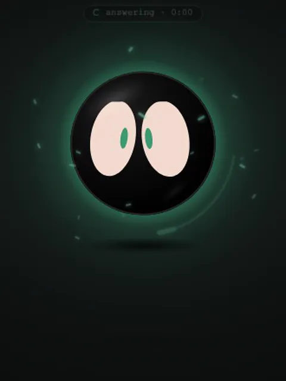
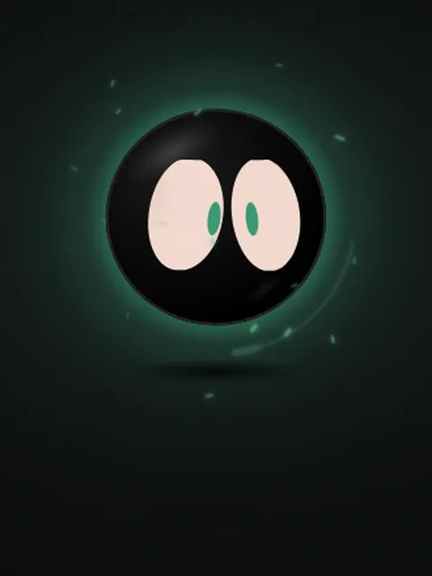
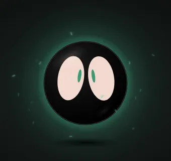
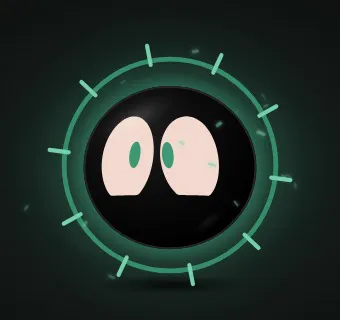
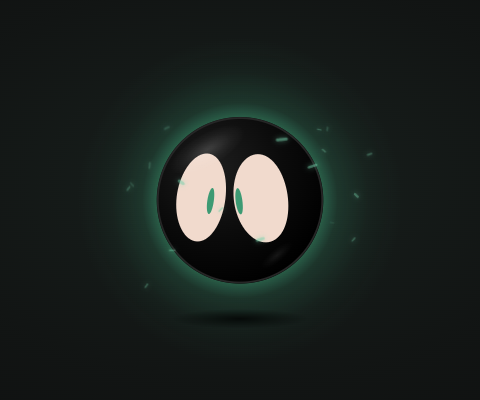
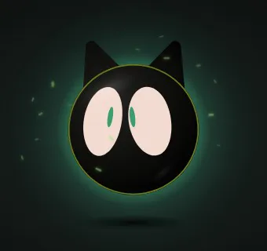
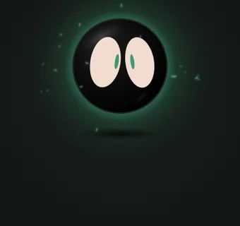
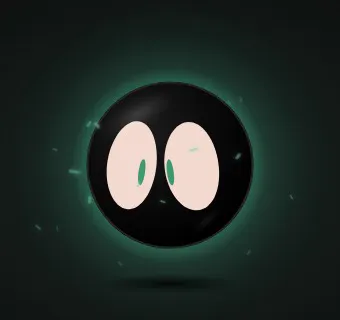

Talk to your code.
Void is a little orb on your desktop. Say “hey Void” and he gets Claude Code to do the work in your project, then tells you how it went.
Free and open source · Windows, macOS and Linux
Void is a little orb on your desktop. Say “hey Void” and he gets Claude Code to do the work in your project, then tells you how it went.
Free and open source · Windows, macOS and Linux

No window, no taskbar button. Just him, floating over whatever you're doing.
He appears in the corner. Drag him anywhere; he remembers the spot.
His ring lights up and moves with your voice. Or just click him.
“What does this project do?” He answers out loud and shows what he did.

Ask for a big job and Void sends out subagents. Each one shows up as a little Void that buds off him and orbits while it works. When one finishes it folds back in with a check, and he tells you what it found, even after he's already answered.
Before he runs a command he asks first. Say “yes”, “no” or “always”.
He's a little guy with a lot of moods.

Say “hey Void”, click him, or keep talking right after he answers.

Happy, curious, shy, sleepy, starry-eyed. His face follows what he says, word by word.

Push him into any screen edge. He glows while you talk and his words drop out of the notch.

Cat ears, a halo, a crown, headphones, a bow, and any colours you like.

Say “remember my blog is in ~/code/blog” and he knows it in every chat.

Rub the mouse over him and he purrs. Click him too much and he dodges.
“Hey Void, run the tests”
“Fix the failing test”
“Make the button blue”
“What's this error on my screen?”
“Explain what I copied”
“Watch my screen”
“Timer 10 minutes”
“Volume up”
“Remind me at 5 to call mom”
Free, MIT licensed, a few minutes to set up.
claude once in a terminal to sign in. Void is the voice and face; Claude Code does the work.No admin needed. Uninstall from Settings → Apps. If it says “Windows protected your PC”, click More info → Run anyway.
For Apple Silicon Macs (M1 or newer). The app isn't notarized by Apple, so the first launch is blocked: open System Settings → Privacy & Security, scroll down and click Open Anyway next to Void.
Paste this into a terminal:
curl -fsSL https://raw.githubusercontent.com/PLAYER99-void/void/main/get.sh | bashWorks on Ubuntu, Debian, Fedora and Arch. It sets up Void, his voice and hearing, and starts him. Then run void any time. Prefer a package? Grab a .deb, .rpm or Arch package from the latest release.